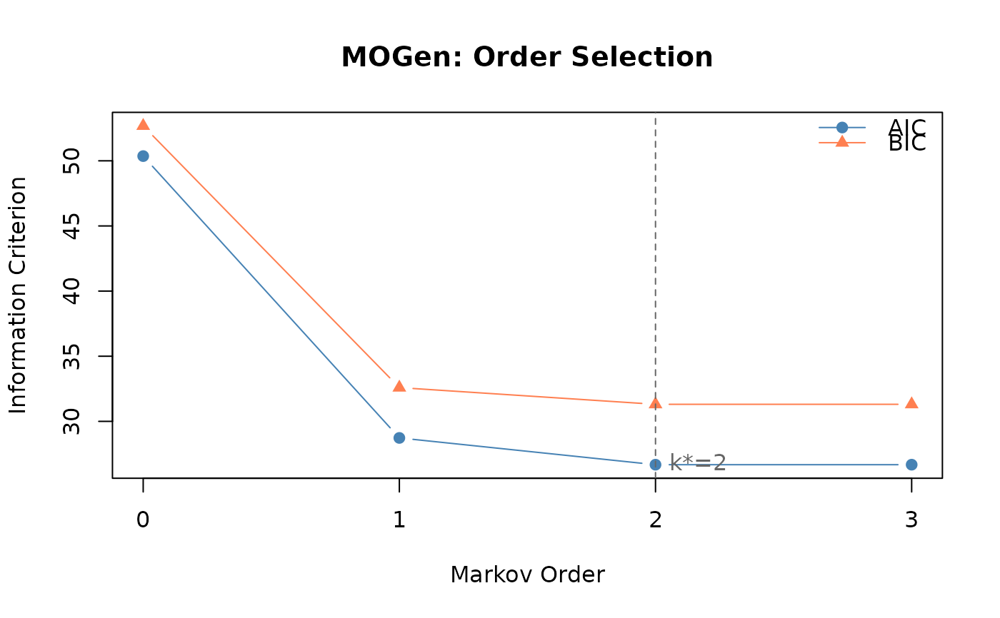

Constructs higher-order De Bruijn graphs from sequential trajectory data and selects the optimal Markov order using AIC, BIC, or likelihood ratio tests.
build_mogen(
data,
max_order = 5L,
criterion = c("aic", "bic", "lrt"),
lrt_alpha = 0.01
)A data.frame (rows = trajectories, columns = time points) or a list of character/numeric vectors (one per trajectory).
Integer. Maximum Markov order to test (default 5).
Must be a whole number; a non-integer value (e.g. 2.7) is an
error rather than being silently truncated.
Character. Model selection criterion: "aic"
(default), "bic", or "lrt" (likelihood ratio test).
Numeric. Significance threshold for LRT (default 0.01).
An object of class net_mogen with components:
Selected optimal Markov order.
Which criterion was used for selection.
Integer vector of tested orders (0 to max_order).
Named numeric vector of AIC values per order.
Named numeric vector of BIC values per order.
Named numeric vector of log-likelihoods.
Named integer vector of cumulative DOF per model.
Named integer vector of per-layer DOF.
List of transition matrices (index 1 = order 0).
Unique first-order states.
Number of trajectories.
Total number of state observations.
At order k, nodes are k-tuples of states and edges represent transitions between overlapping k-tuples. The model tests increasingly complex Markov orders and selects the one that best balances fit and parsimony.
Scholtes, I. (2017). When is a Network a Network? Multi-Order Graphical Model Selection in Pathways and Temporal Networks. KDD 2017.
Gote, C. & Scholtes, I. (2023). Predicting variable-length paths in networked systems using multi-order generative models. Applied Network Science, 8, 62.
seqs <- list(c("A","B","C","D"), c("A","B","C","A"), c("B","C","D","A"))
mg <- build_mogen(seqs, max_order = 2)
# \donttest{
trajs <- list(c("A","B","C","D"), c("A","B","D","C"),
c("B","C","D","A"), c("C","D","A","B"))
m <- build_mogen(trajs, max_order = 3)
print(m)
#> Multi-Order Generative Model (MOGen)
#> Optimal order: 2 (by aic)
#> Orders tested: 0 to 3
#> States: 4
#> Paths: 4 (16 observations)
#> AIC: 50.4 | 28.7 | 26.7* | 26.7
#> BIC: 52.7 | 32.6 | 31.3* | 31.3
#> (* = minimum; AIC and BIC agree on order 2)
plot(m)

# }